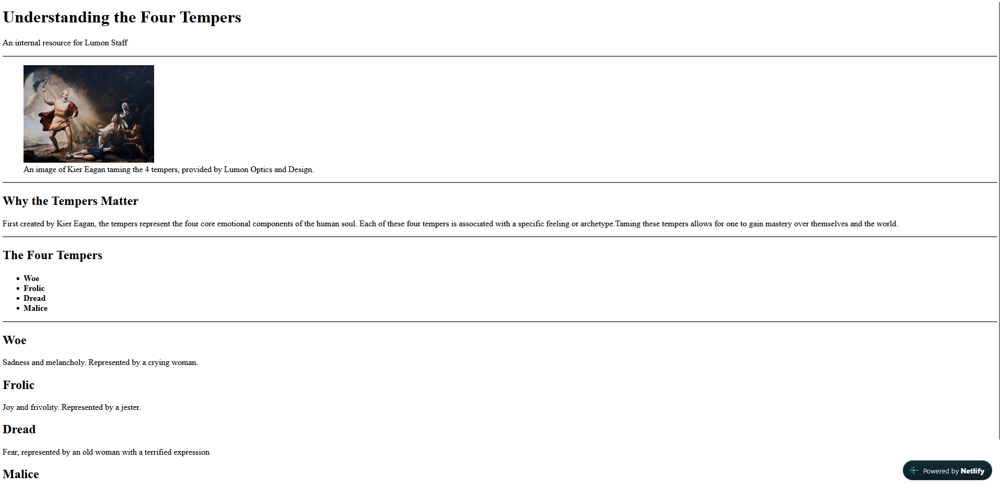
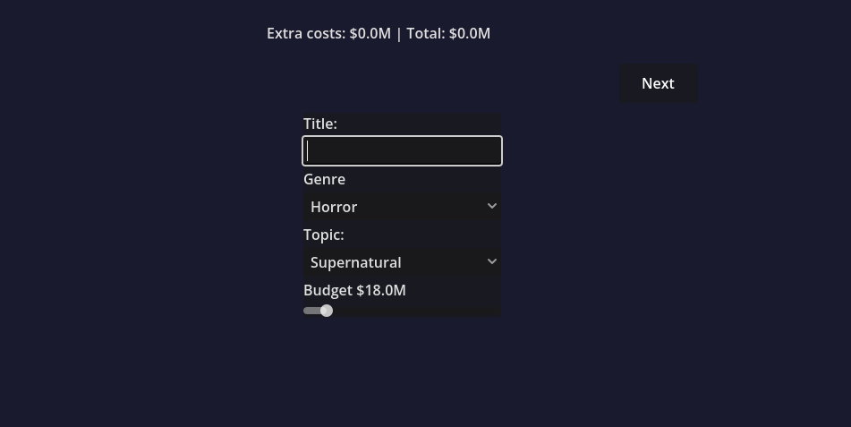

Exploring the systems beneath the surface and creating unique digital
experiences.
Calvin Sanders | Information science student and explorer of digital
systems
Hi, I'm Calvin. I am currently studying information science, and have
an interest in many things related to the process of managing and
building digital systems. This portfolio will serve as an introduction
and showcase of some of my projects so far.
About
I am an information science student at Michigan State
University.
Initially seeking a degree in computer science, I transferred here in
the Fall of 2025 and quickly took an interest in the field of
information science. While the two fields are very similar, I
appreciate the focus on the interaction between information,
technology, and people that is provided by information science. I am
currently in the process of finishing up my final year and attaining
my bachelor's degree. I have an interest in examining and working with
the systems that lie below the surface, as well as creating unique
digital experiences. I'm the kind of person who needs to know what's
happening behind the screen: How a game calculates a stat or score,
how a program turns a click into a result, how information is
organized.
I'm drawn to working in remote-friendly roles because the work I
enjoy, building and digging into digital systems, happens through
focused problem-solving and clear writing.
My Interests:
Interactive applications
Web development
Game development
Digital information architecture
Projects
A selection of things I've built or am currently working on
Lumon Four Tempers Resource

The Four Tempers Website
A webpage inspired by the world of Severance. It presents
information on the "Four Tempers". Acting as an introductory
project, the page makes use of several beginner HTML concepts.
I used Severance as inspiration for this project as it is something
I am personally interested in. In addition, the simplistic look of
the page seems to fit right into the corporate world of Lumon as
featured in the television show. The webpage itself is meant to act
as an internal resource for employees of the fictional corporation.
Although I had worked with HTML before taking on this project, it had been a few years since I worked with it. This project served as a much-needed refresher.
Built with:
HTML5
Completed:
What I learned
The importance of writing HTML by assigning meaning instead of
focusing on the visual aspect of the page.
Movie Tycoon Project

The initial stage in creating a movie
This project is a very early version of what will eventually be an
interactive movie tycoon game. It currently allows the user to
progress through several stages of building their own movie. The end
result of the process is a critic score and financial report. It is
currently very rudimentary, but there is much planned for its
future. Some of the features I wish to eventually add include a
catalog for viewing your creations, further features during movie
creation, and, eventually, auto generated movies to compete with.
One significant challenge I have faced with this project is
accurately calculating the critic score for each movie created. With
the creation process taking several stages, each with its own
choices, there is a lot to factor in. It is difficult to fine-tune
the calculation so that it is somewhat representative of real-world
scores, but also allows some freedom and experimentation.
Built with:
Godot
Currently in progress
What I learned
Managing the different interacting elements when creating even a
simple game is a complex process. Even the simplest of features
requires strict planning.